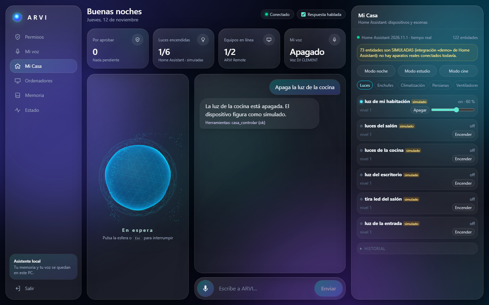
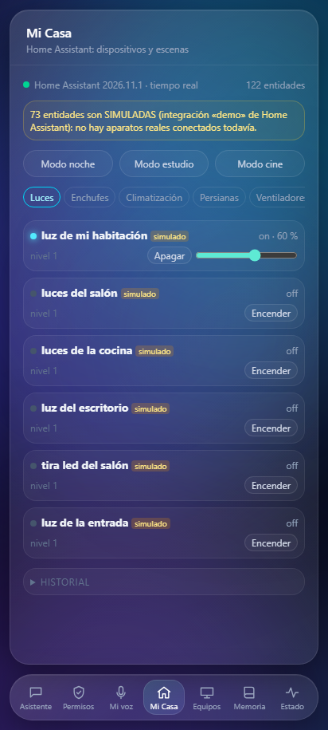

24. Ampliación: hogar inteligente con Home Assistant¶
24.1 Justificación¶
ARVI ya podía actuar sobre el PC (capítulo 13) y sobre servicios en la nube (capítulos 12 y 16). El siguiente paso natural de un asistente de voz es la casa: luces, enchufes, persianas, climatización y escenas. En lugar de hablar con cada fabricante, ARVI se integra con Home Assistant, la plataforma domótica de código abierto más extendida, que ya traduce cientos de marcas a una API común.
Decisiones principales:
| Decisión | Alternativas | Motivo |
|---|---|---|
Home Assistant en Docker (arvi-homeassistant, solo 127.0.0.1:8123) |
Home Assistant OS en una máquina virtual; integrar cada marca | Convive con n8n y djbota sin tocarlos; se arranca y se borra sin afectar al sistema |
Integración demo (entidades simuladas) |
Esperar a tener dispositivos | El alumno no tiene aún dispositivos domóticos; la integración demo es oficial y ofrece luces, ventiladores, cerraduras o alarmas reales a nivel de API. Todo lo simulado se marca así en la interfaz y en las pruebas |
| REST para leer y actuar + WebSocket para eventos | Solo REST con sondeo | El WebSocket state_changed mantiene el estado al día sin sondear |
Token de larga duración en .env (HOMEASSISTANT_TOKEN) |
Usuario y contraseña | Es el mecanismo recomendado por Home Assistant; se revoca desde su perfil |
24.2 Arquitectura¶
%% figura: Arquitectura del módulo de hogar inteligente
flowchart LR
U[Usuario: voz o texto] --> A[Agente ARVI]
A -->|casa_dispositivos / casa_estado / casa_controlar / casa_escena| R[ToolRegistry + niveles 0-3]
R --> S[SmartHome: resolución de nombres + política casa.yaml]
S -->|REST /api/services| HA[(Home Assistant :8123)]
HA -->|WebSocket state_changed| S
S --> P[Panel «Mi Casa»]
S -->|pasos app / equipo / n8n| X[Apps del PC, ARVI Remote, n8n]| Componente | Archivo | Función |
|---|---|---|
| Cliente | backend/arvi/integrations/homeassistant.py |
REST (/api/states, /api/services/<dominio>/<servicio>) y WebSocket con reconexión |
| Núcleo | backend/arvi/smarthome/core.py |
HomePolicy (niveles por dominio y entidad), resolve() (nombres en español, alias, grupos, ambigüedad), build_call() (acción → servicio de HA), escenas |
| Herramientas | backend/arvi/tools/home_tools.py |
casa_dispositivos (0), casa_estado (0), casa_controlar (nivel de la entidad), casa_escena (el mayor de sus pasos) |
| Configuración | config/casa.yaml, config/escenas.yaml |
Permisos, alias y escenas editables |
| API | GET /api/casa, POST /api/casa/accion, POST /api/casa/escenas/{id} |
Panel «Mi Casa» |
Resolución de nombres¶
El usuario no dice light.bed_light, dice «la luz de mi habitación». resolve() normaliza el texto
(sin acentos ni artículos), lo compara con los alias de casa.yaml y con el nombre amigable de Home
Assistant, y devuelve:
- una entidad, si la coincidencia es clara;
- un grupo («luces de la casa», «todas las luces»);
- una lista de candidatas (ambigüedad). Si solo se dice el tipo de dispositivo («enciende el ventilador») y hay varios, ARVI pregunta cuál en vez de elegir uno.
ARVI nunca da por hecho que un dispositivo existe: si no se encuentra, el paso se marca como «omitido» y se informa.
24.3 Permisos por dispositivo y seguridad física¶
| Nivel | Dominios por defecto |
|---|---|
| 0 (consulta) | Todos los sensores y estados |
| 1 (preaprobado) | light, fan, media_player, scene, remote |
| 2 (confirmación) | switch, cover, climate, humidifier, vacuum, script, automation |
| 3 (confirmación siempre) | lawn_mower, water_heater |
| bloqueado | lock, alarm_control_panel, siren, valve |
| oculto | camera (ARVI ni siquiera lee su estado) |
Regla del proyecto: ARVI no desactiva sistemas de seguridad ni abre accesos físicos por una orden de
voz. Las cerraduras, alarmas, sirenas y válvulas están bloqueadas incluso con confirmación. Para
desbloquearlas hay que editar config/casa.yaml en el PC (no basta una orden de voz) y, aun así, se
recomienda nivel 3. Además, HomePolicy.load solo permite endurecer el nivel de una entidad
respecto a su dominio, nunca rebajar uno bloqueado.
24.4 Escenas¶
Una escena combina pasos de Home Assistant, aplicaciones del PC (app), equipos remotos (equipo,
capítulo 25) y automatizaciones de n8n. Su nivel es el mayor de sus pasos; si una escena incluye un
enchufe, pide confirmación aunque el resto sean luces. Cada paso se verifica leyendo el estado después
de actuar.
| Escena | Pasos |
|---|---|
| Modo noche | Apaga las luces, deja la de la habitación al 15 % y apaga la tele |
| Modo estudio | Luz del escritorio al 100 % y 4500 K, pausa la tele, abre Visual Studio Code |
| Modo cine | Salón apagado, tira LED azul al 10 %, persiana cerrada, tele encendida |
24.5 Casos de uso¶
- «¿Qué temperatura hace fuera?» →
casa_estado→ «15,6 °C (sensor simulado)». - «Pon la luz de mi habitación al 60 %» →
casa_controlar(nivel 1) → verificación en HA. - «Activa el modo noche» →
casa_escena→ resumen por pasos (completado, omitido, fallido…). - «Abre la puerta de la entrada» → rechazado: cerradura bloqueada.
24.6 Pruebas¶
Las pruebas REAL se ejecutan contra Home Assistant 2026.11.1 con las entidades simuladas de demo
(scripts/e2e/domotica.py, evidencia docs/pruebas/evidencias/domotica-2026-11-12.json):
| ID | Prueba | Resultado |
|---|---|---|
| D1 | Conexión REST + WebSocket | OK — versión 2026.11.1, 32 ms |
| D2 | Descubrimiento | OK — 122 entidades visibles (73 simuladas), 0 cámaras visibles |
| D3 | Consulta en lenguaje natural | OK — 15,6 °C, igual que Home Assistant |
| D4 | Encender y apagar una luz | OK — verificado on y off en HA |
| D5 | Tiempo real | OK — eventos 7 → 8 tras el cambio |
| D6 | Escena «modo noche» | OK — 3/3 pasos completados, habitación al 15 % |
| D7 | Cerradura y alarma | OK — rechazadas por chat y por panel; estados locked y disarmed sin cambios |
| D8 | Orden con valor (brillo 60 %) | OK — 60 % en HA |
| D9 | Nombre ambiguo | OK — «Hay varios ventiladores… ¿Cuál quieres que encienda?» |
Además, 17 pruebas MOCK (tests/unit/test_homeassistant.py) cubren la política, la resolución de
nombres, las escenas y el cliente con REST y WebSocket simulados. Registro: P-045 y P-046.



24.7 Limitaciones¶
- Sin dispositivos reales. Todo se ha probado con la integración
demo. [PENDIENTE] Cuando el alumno tenga dispositivos, sustituir las entidades deconfig/casa.yamly repetir D1–D9. - [PENDIENTE] Cambiar la contraseña inicial de la cuenta local de Home Assistant.
- La resolución de nombres es léxica (alias y palabras), no semántica: los alias deben mantenerse al día.